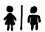
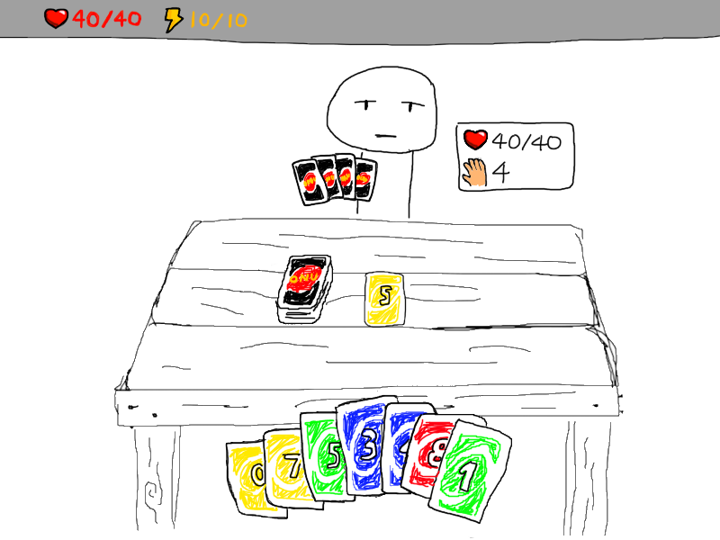
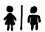
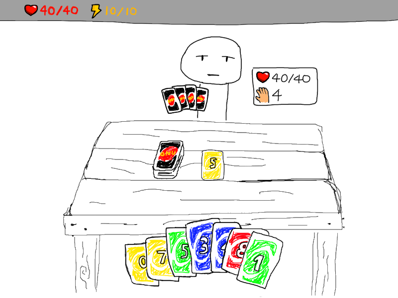
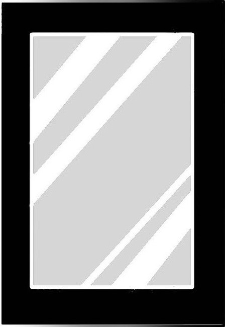
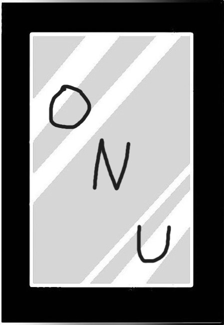
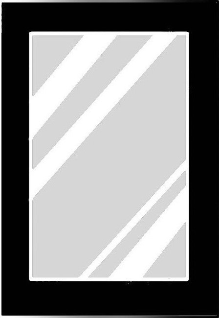
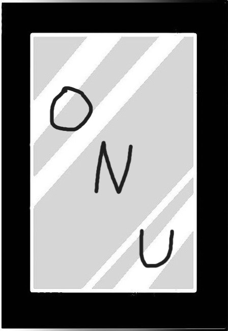
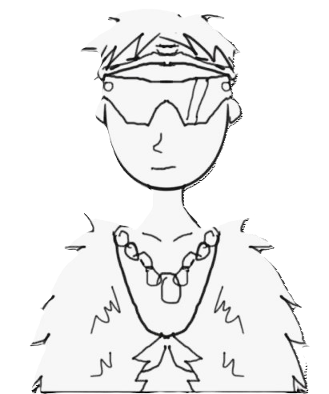
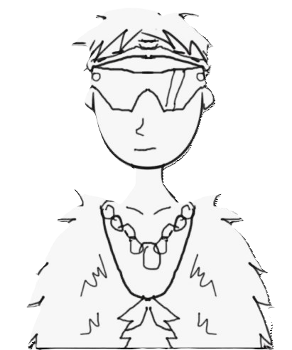

ONU
Description
ONU is a strategic game that adds a roguelike twist to the famous party game UNO. In order to become the world's greatest ONU player, the player must defeat increasingly difficult opponents.
Change the Rules
In ONU, players bring their own house rules to every match in the form of Rule Cards. Rule Cards change how the game is played, from letting you play mismatching colors to drawing extra cards.
You will also pick up powerful Action Cards—powerful, single use cards that can change the tides in a single play. (E.g. Wild Card)
Each run is different
Throughout a run, you will encounter events and gain upgrades that give you an edge in battle. You might add or remove cards, or upgrade existing ones.
The map is also randomly generated each time, meaning you'll have to be creative and find the best path.
Gameplay
Gallery
 




 



 



The Future
The game will further develop by having more areas to explore when the player finishes the first area. We will also add more enemies, more Rule Cards, more Action Cards, and more types of upgrades for the player. Of course, we also plan to add sounds and more art. While we want to have players learn as they go, we plan to add a bit more to the new player experience, in order to give them a better understanding of how to play.
The Team
Winston Co
Programmer
Jake Dickinson
Programmer
Rachel Ouye
Art
Bret Witt
Programmer